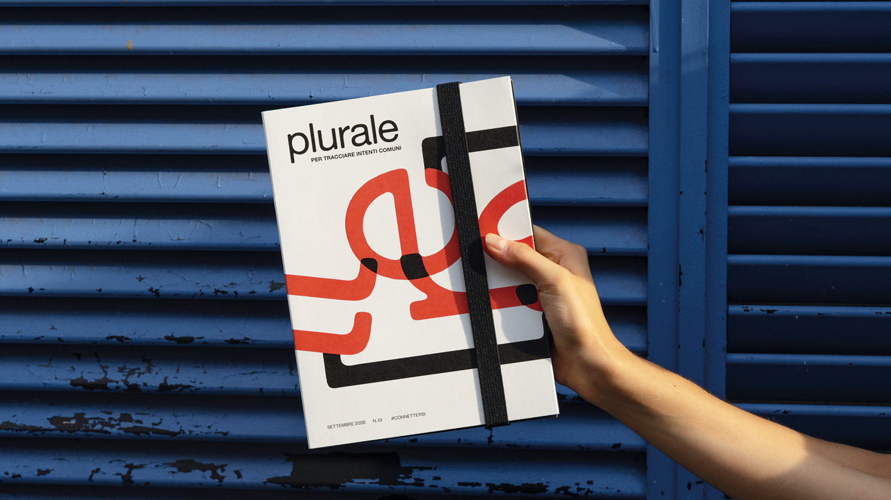
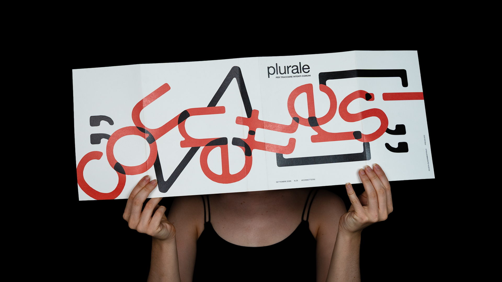
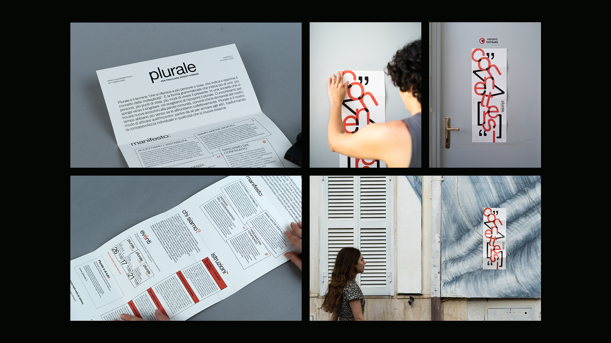

plurale risponde alla necessità, evidenziata da sociologi e psicologi, di ricostruire uno spazio noicentrico capace di contrastare gli effetti dell’individualismo e della società della performance. Attraverso un approccio sistemico, l’output progettuale trasforma il design editoriale in un attivatore sociale: la rivista non è la soluzione, ma la mediatrice tra persone, temi e luoghi.

Nonostante si parli tanto di benessere fisico e mentale, si trascura il terzo pilastro della salute, il benessere sociale, ossia la qualità delle relazioni che costruiamo. È scientificamente provato che la salute sociale riduce il rischio di malattie, allunga la vita e rafforza le comunità.
“Un sistema di prodotti, servizi e comunicazione che mette le persone in grado di collaborare per soddisfare i propri bisogni e per diffondere le proprie soluzioni.”
La rivista è un oggetto che possiede intrinsecamente qualità che la nostra società fatica a valorizzare, ma di cui si avverte sempre più il bisogno: la lentezza, la fisicità, la ritualità, la condivisione, la responsabilità, la complessità.


Per permettere aggregazione e dialogo intorno ai contenuti, è stato necessario pianificare la cadenza e la natura delle esperienze intorno a Plurale in modo che generassero continuità e periodicità.